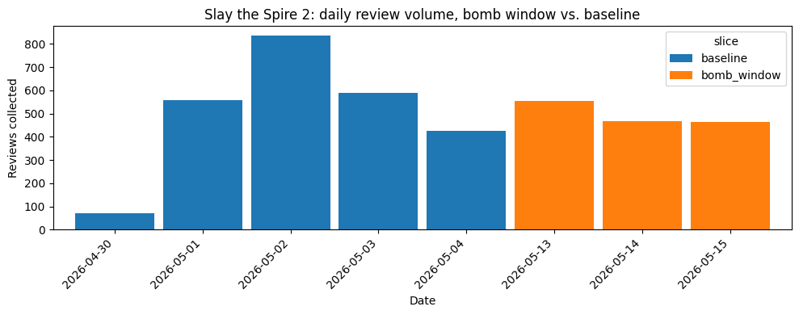

Steam Review Filter and Score
Recovering a game's genuine sentiment by filtering out low-quality and review-bombed reviews — demoed live, on any game.


Steam's aggregate score can lie to you
Review bombs and one-word "reviews" count equally toward a game's public score — even though Steam already knows some of it is coordinated noise.
- Stakeholders: players, developers/publishers, and Steam itself — which filters some of this internally but never shows a "genuine sentiment" score.
- Business question: can we recover genuine sentiment in a Steam-comparable score?
- Data question: can text + metadata separate genuine reviews from noise reliably enough to trust it?
4 games, ~16,000 reviews, pulled live from Steam's API
| Game | Baseline | Bomb-window | Role |
|---|---|---|---|
| Helldivers 2 | 3,988 | — | Baseline comparison |
War Thunder | 3,929 | — | Baseline comparison |
| Team Fortress 2 | 3,916 | — | Baseline comparison |
| Slay the Spire 2 | 2,476 | 1,485 | Bomb case study |
Scoped to English-language reviews only — a human has to be able to verify a sentiment call to defend it. Steam's own language tag turned out to be reviewer-selected, not content-checked, so a second content-based filter dropped a further 206 mistagged reviews.
The signal was visible before any model touched it

A real spike near zero — a meaningful share of reviews are just a handful of characters.

Slay the Spire 2's daily volume, cleanly separated into bomb-window vs. baseline slices.
Five features, each with a business reason to exist
| Feature | Why it matters |
|---|---|
is_very_short | Near-zero-effort reviews say little about the game. |
is_low_playtime | A strong opinion after minutes ≠ after real engagement. |
is_duplicate_text | Coordinated campaigns reuse the same slogan. |
daily_volume_zscore | The core bomb signal — is today abnormal? |
is_new_reviewer | Pile-on accounts often have no history. |
Leakage-safe by design: "what's normal" is always fit on the training split only.
Three algorithms, one honest iteration story
| Model | Precision | Recall | F1 | ROC-AUC |
|---|---|---|---|---|
| Isolation Forest (unsupervised) | 0.042 | 0.040 | 0.041 | 0.361 |
| Logistic Regression, structural only | 0.154 | 0.793 | 0.258 | 0.683 |
| Logistic Regression, structural + text (TF-IDF) | 0.282 | 0.697 | 0.402 | 0.847 |
Adding review text nearly doubled precision. Top "bomb-like" words: anita, dei, sarkeesian, woke — the model is keying on the actual controversy, not noise.
Classical ML vs. deep learning — closer than you'd think
| Model | Precision | Recall | F1 | ROC-AUC |
|---|---|---|---|---|
| LSTM (deep learning) | 0.922 | 0.904 | 0.913 | 0.899 |
| TF-IDF + Logistic Regression (classical ML) | 0.942 | 0.877 | 0.908 | 0.928 |
Deep learning's extra capacity isn't paying off much at this data volume (~11k training rows) — a real, honest finding, and the reason the live app uses the simpler model.
The headline number: filtering changes the score
| Game | Before | After |
|---|---|---|
| Helldivers 2 | 79.4% | 78.6% |
War Thunder | 52.1% | 49.5% |
| Team Fortress 2 | 93.9% | 93.7% |
| Slay the Spire 2 | 85.0% | 89.7% |
Our sample is a ~2-week, English-only window — this recovers English-speaking-reviewer sentiment for that window, not Steam's full all-time score. Stated plainly, not hidden.
Try it on any game, right now
Running locally at localhost:8501 — start it before presenting with streamlit run app.py.
If the frame above is blank, the app isn't running yet, or open it directly in a new tab as a fallback.
What this proves, and what's next
Supervised beats unsupervised for bomb detection (ROC-AUC 0.847 vs. 0.361). Adding review text recovered the accuracy lost to an English-only scope — without anything unverifiable.
- A second bomb case study to confirm the pattern generalises
- Per-language models beyond English
- Calibrate the threshold to a real precision/recall target
- Public deployment (Streamlit Community Cloud)